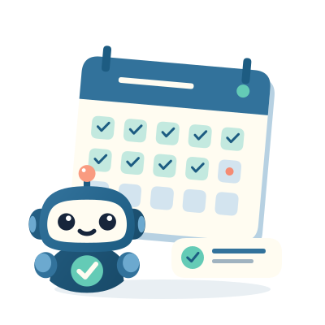
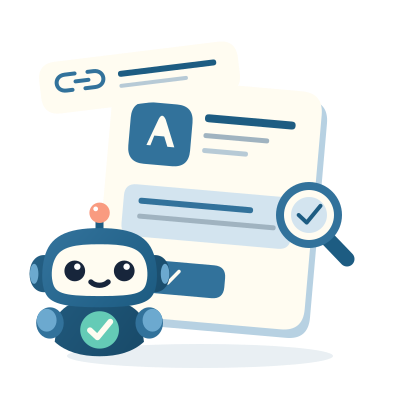

Live design preview · soft Ocean glow and scattered shapes · matching light and dark themes
BETTER TOGETHER
Meet developers who test each other’s apps. Find your crew and help good ideas grow.
Already here? Sign in
FRESH EYES, BETTER APPS
Ask the Circle to try your app. Share what works, spot what needs fixing, and help each other improve.

ONE DAY AT A TIME
Join a closed-testing crew, follow your daily tasks, and see your testing progress in one place.

YOUR APP, IN THE SPOTLIGHT
Add your Play link or package name. We’ll look up your app details so you can ask the Circle for feedback.
TAKE A LOOK AROUND
Browse the Circle and Crew without an account. Sign in when you’re ready to take part.